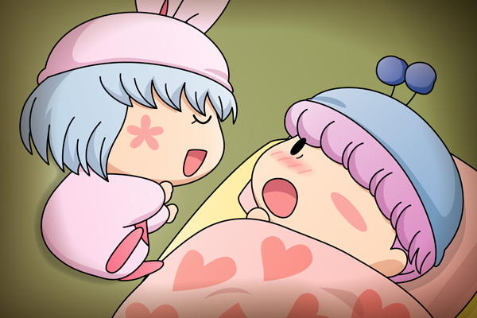

パピィ（すぴー、すぴー）
ムルモ「・・・パピィの部屋で寝ることになるなんて考えてもいなかったでしゅ。
パピィと一緒に寝るのはいったい何年ぶりでしゅかね。
う～～、色々考えてると緊張して全然眠れないでしゅ～っ」
ムルモがつぶっていた目を時折開くと、ベッドの上で気持ちよさそうに眠っているパピィのかわいい寝顔が見えて、そのたびにムルモはますます緊張して眠れなくなるのでした。
ムルモ「どうにかして寝ないと・・・でしゅ・・・」
１時間後・・・。
どすんっ！
ムルモ「ほぇ・・・何事でしゅか？」
ムルモが目を開けると・・・。

ムルモ「！！」
声にならない悲鳴を上げるムルモ。
何と目の前にパピィの寝顔が！！
寝相の悪いパピィがベッドから落ちて、ムルモのすぐ側まで転がってきていたのでした。
パピィ「ムル・・・むにゃむにゃ・・・」
パピィの手足はじたばたしていて、それは今にもムルモに抱きつこうとしているかのように見えました。
そして夜が明けて・・・。
パピィ「あら？ムルモ、寝不足なの？」
ムルモ「何でもないでしゅ、ほっといて欲しいでしゅっ！
（いったい誰のせいでこうなったと思ってるんでしゅか！）」
パピィ「朝から何怒ってんのよっ。
さぁ朝ご飯作るからムルモも手伝いなちゃい！」
ムルモ「ほぇ～～っ、ボクもでしゅか～～！？」
第58回投票結果の続きの絵を描いてみました。パピィの家にお泊まりすることになったムルモが待ち受けていたものは・・・お約束的展開でした(笑)。ここまで寝相が悪いと、ムルモはパピィに襲われているような感じにも見えますね。ちなみにこの後パピィは違う方向に転がっていったため、何とかムルモは事なきを得ていますということで(^^;。
紳士なムルモはパピィの寝相の悪さについてはパピィに黙っています。当然、パピィも昨晩ムルモに大接近したことは分かっていないのですが。大接近した瞬間をパピィのお母さんが目撃していたら、そこから新たなストーリーが始まりそうな予感がしますね。
(2008/7/17)